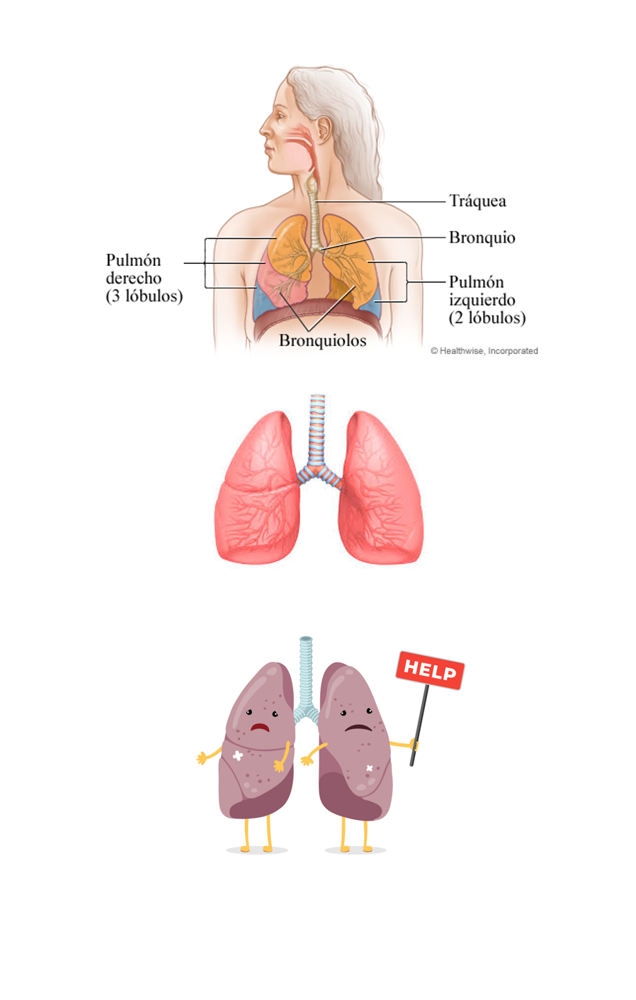

El pulmón es un órgano esencial del sistema respiratorio que se encarga de captar el oxígeno del aire y eliminar el dióxido de carbono. Funciona a través de la inhalación y exhalación de aire, donde los alvéolos pulmonares realizan el intercambio gaseoso.
La inspiración y la espiración son procesos activos que se llevan a cabo mediante la contracción y relajación de los músculos respiratorios y el diafragma.
El aire entra por la nariz o la boca, pasa por la tráquea y llega a los bronquios, que se bifurcan en bronquiolos más pequeños que terminan en los alvéolos.
Características de un pulmón sano incluyen una buena capacidad respiratoria, ausencia de infecciones o enfermedades respiratorias crónicas, tejido pulmonar elástico y una adecuada oxigenación de la sangre.
PULMON SANO: La capacidad pulmonar varía según la edad, el sexo, la altura, el peso y otros factores. El volumen respiratorio normal es de unos 500 ml de aire por respiración en un adulto en reposo.
PULMON NO SANO: Algunas características de un pulmón no sano pueden incluir dificultad para respirar, presencia de enfermedades respiratorias crónicas como el asma o la enfermedad pulmonar obstructiva crónica (EPOC), inflamación o daño en el tejido pulmonar, infecciones recurrentes y disminución de la capacidad pulmonar.
|

|